Page-By-Page Source Map
The PDF scan has sixteen pages. Page 16 is mostly unrelated handwritten notes, so the rebuild preserves the chemistry content from pages 1-15 and notes the blank final scan in the source summary.
Atoms, molecules, ions, substances, separation, isotopes, allotropes, electron configuration, bonding, metals, and alloys.
Atoms, molecules, ions, elements, compounds, and mixtures with filled-in examples.
Fixed ratio, chemical formula, decomposition, sugar dehydration, water electrolysis, and compound properties.
Homogeneous and heterogeneous mixtures; alloy as a mixture question.
Magnet, filtration, sedimentation, evaporation, centrifuge, chromatography, distillation, and quiz answers.
Chlorine, hydrogen, carbon isotopes; carbon, oxygen, sulfur, and phosphorus allotropes.
Valence electrons, first 20 electron configurations, noble gases, ionic bonding, and covalent bonding.
Periodic trends, metallic bond, alloy examples, corrosion conditions, and wrap-up.
Atoms, Molecules, And Ions
Chemistry explains matter by looking at particles. The scan begins by separating three basic particle ideas: atoms, molecules, and ions.
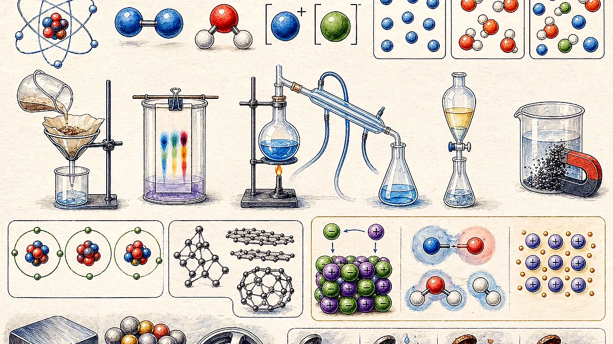
Atoms are the smallest particles of an element. Noble gases are monatomic elements, meaning they exist naturally as single atoms.
A molecule is a group of two or more atoms that are chemically combined. Molecules may be elements or compounds.
An ion is a charged particle that can make up compounds, such as sodium chloride, NaCl.
Diatomic And Polyatomic Element Molecules
Hydrogen, iodine, chlorine, and oxygen commonly appear as two-atom molecules: H2, I2, Cl2, and O2.
Sulfur, phosphorus, ozone, and fullerene can form molecules with more than two atoms, such as O3 and C60.
Important distinction: a molecule can be an element, like O2, or a compound, like water, H2O. A compound always contains at least two different elements chemically combined.
Elements, Compounds, And Mixtures
A central skill in this lesson is deciding whether a sample is an element, a compound, or a mixture. The table below converts the filled-in scan into a cleaner comparison.
| Type | What it contains | Composition | How it can be separated or broken down | Examples |
|---|---|---|---|---|
| Element | One type of atom | Fixed by identity of the element | Cannot be broken down into simpler substances by chemical processes | Mercury, copper, oxygen, chlorine |
| Compound | Two or more different types of atoms | Atoms chemically combined in a fixed proportion | Can be broken down by chemical processes such as electrolysis or thermal decomposition | Water, sodium chloride, sucrose |
| Mixture | Two or more substances not chemically combined | Variable composition | Separated by physical processes such as magnetic separation, filtration, evaporation, or distillation | Air, soil, tap water, cereal in milk |
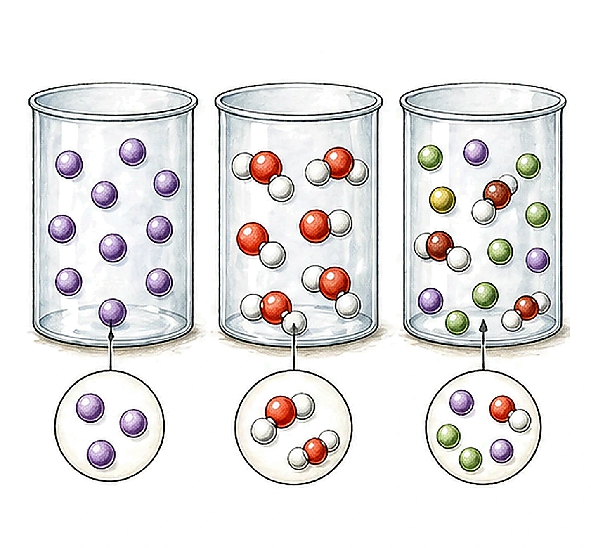
Compounds And Chemical Formulae
A compound is a pure substance containing two or more elements chemically combined in a fixed ratio. Its chemical formula tells us both the types of atoms and the ratio of the different atoms present.
Water is H2O: two hydrogen atoms and one oxygen atom in each molecule. Electrolysis can break water down into hydrogen and oxygen gases.
Common salt has properties very different from sodium metal and chlorine gas because the atoms become ions in an ionic lattice.
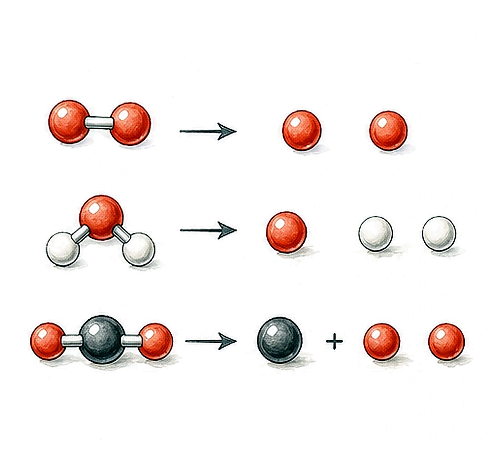
Added explanation: "Broken down" for a compound means its chemical bonds are changed. A physical method such as filtering cannot turn water into hydrogen and oxygen, because the atoms are chemically bonded.
Mixtures
A mixture is made up of two or more substances that are not chemically combined. The components are not fixed and can be present in any ratio.
The composition is non-uniform. Examples from the scan include cereal in milk, ice in soda, soil, and blood.
The composition is uniform. Examples from the scan include vodka, air, rainwater, and steel.
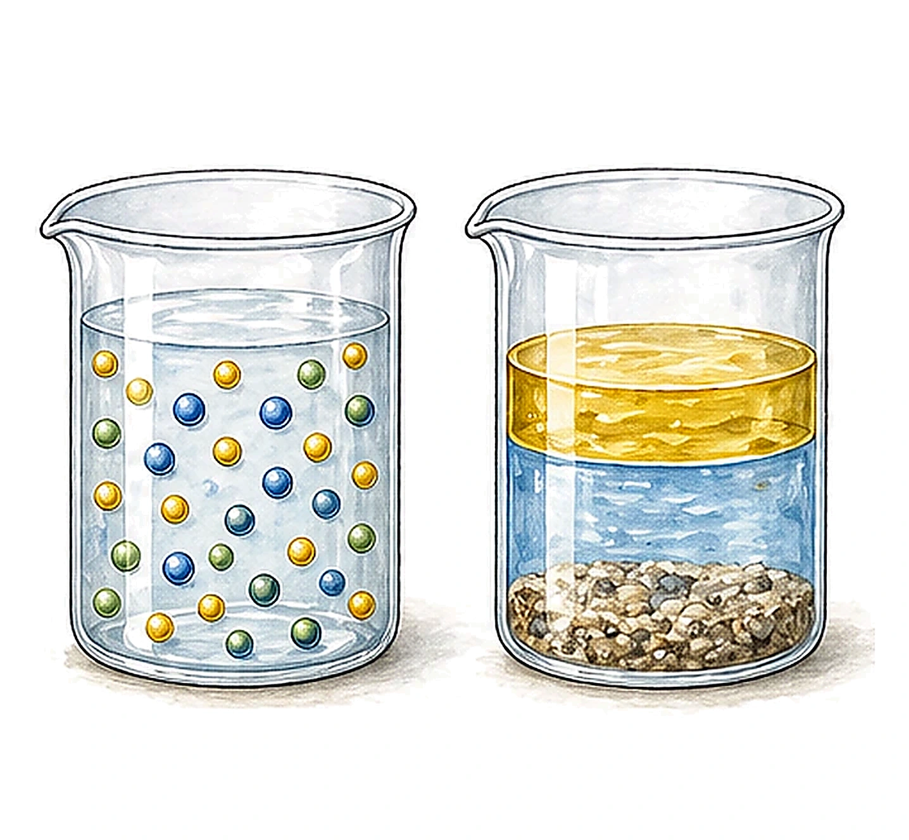
Alloy question from the scan: an alloy is a mixture, not a compound. Many classroom alloy examples are homogeneous solid mixtures, although real alloys can sometimes contain more than one phase.
Methods Of Separating Mixtures
Mixtures can be separated because their substances keep their own physical properties. The right method depends on differences in magnetism, solubility, particle size, boiling point, movement through paper, or density.
Separates magnetic solids, such as iron filings, from non-magnetic solids.
Separates an insoluble solid from a liquid by trapping the solid or allowing it to settle.
Removes solvent to recover a dissolved solid, especially when the solid is stable on heating.
Spins mixtures so denser particles move outward faster and separate.
Separates soluble substances that move at different speeds through paper or another stationary phase.
Separates liquids or recovers solvent using differences in boiling point.
Choosing A Method
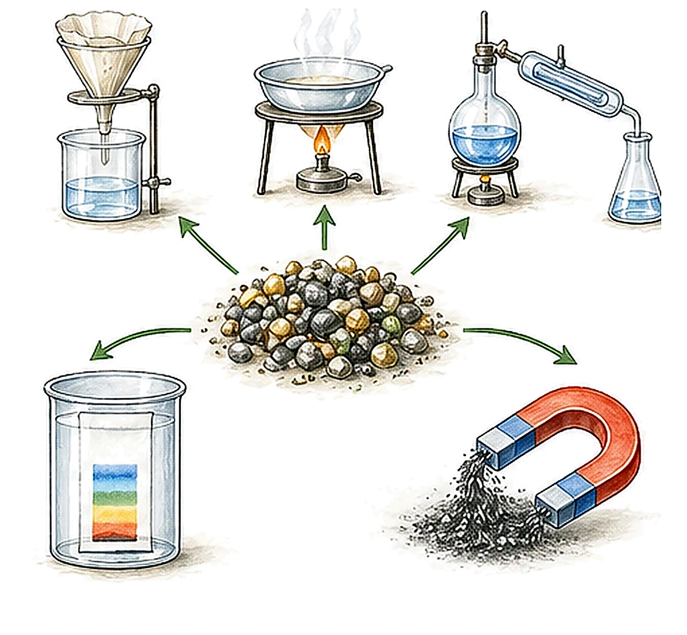
| Problem | Method from the scan | Why it works |
|---|---|---|
| Insoluble solid from liquid | Filtration | Filter paper traps the solid residue; liquid passes through as filtrate. |
| Soluble solid from liquid | Evaporation to dryness or crystallisation | The solvent leaves; dissolved solid remains or forms crystals. |
| Solid mixture where one is soluble | Use a suitable solvent | Only one solid dissolves, so it can be separated from the insoluble solid. |
| Solid mixture where one is magnetic | Use a magnet | The magnetic solid is attracted and removed. |
| Solid mixture where one sublimes | Sublimation | One solid changes directly to gas and can be re-deposited. |
| Liquid from a solution | Simple distillation | Solvent boils, vapor condenses, and is collected. |
| Immiscible liquids | Separating funnel | Liquids form layers because they do not mix and have different densities. |
| Miscible liquids | Fractional distillation | Liquids mix, so separation depends on different boiling points. |
| Several dissolved coloured substances | Paper chromatography | Substances travel different distances; a locating agent may reveal colourless substances. |
Quiz Answers From The Scan
The scan includes a short quiz after the separation-method flowchart. The answers below preserve the filled-in markings and add the chemistry reason.
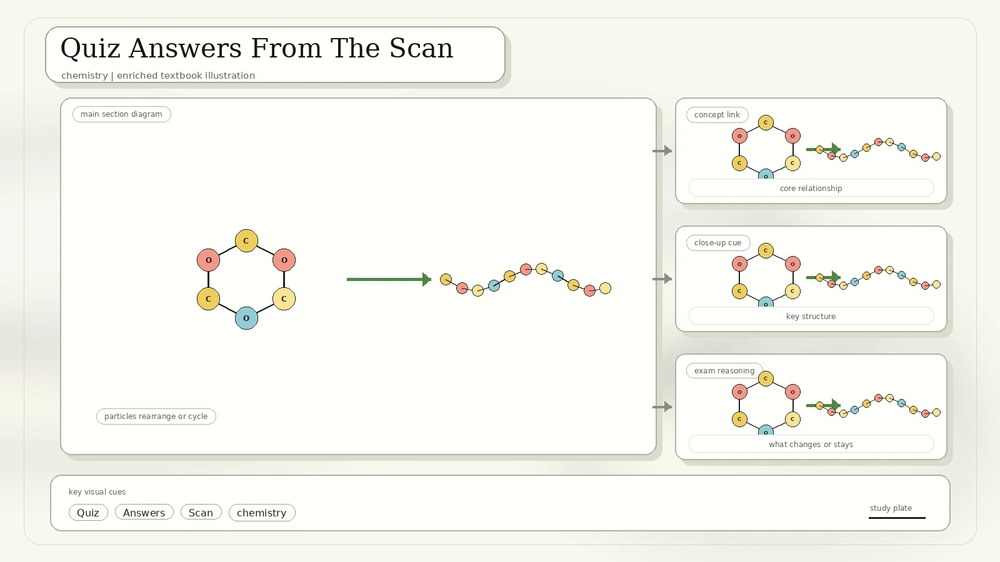
Isotopes
Isotopes are atoms of the same element with the same number of protons and electrons, but a different number of neutrons. Because neutron number changes, isotope mass changes too.
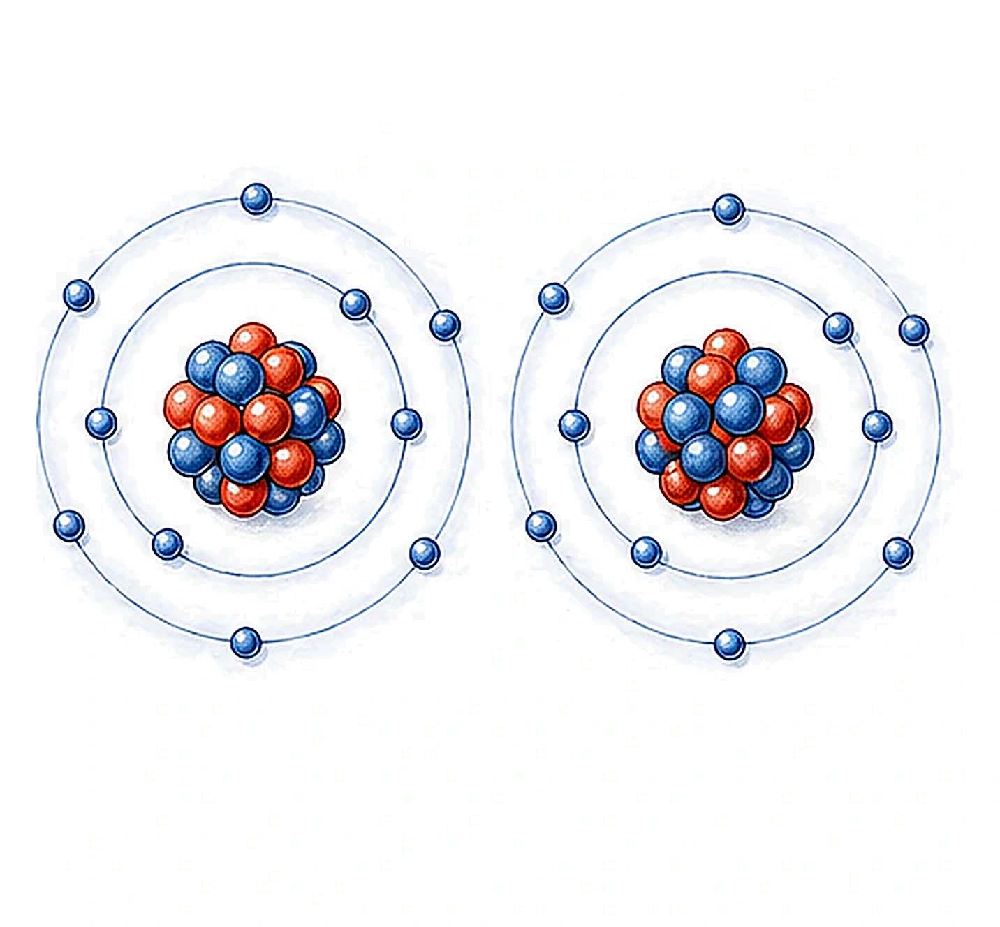
Number of protons, number of electrons, chemical identity, and most chemical behaviour.
Number of neutrons and mass. Radioactivity may differ between isotopes.
A stable isotope is not radioactive. The scan notes that there are about 400 stable isotopes.
| Examples from the scan | Classification | Note |
|---|---|---|
| Chlorine-35 and chlorine-37 | Stable isotopes | Same 17 protons; different neutron numbers. |
| Hydrogen-3 and carbon-14 | Radioactive isotopes | Hydrogen-3 is tritium; carbon-14 is used in dating once-living material. |
| Iodine-131, uranium-235, uranium-238 | Radioactive isotopes | Useful in medicine, nuclear science, or dating, but require radiation safety. |
Allotropes
Allotropes are different structural forms of the same element. Because atoms are connected or arranged differently, allotropes can show very different physical properties and chemical behaviours.
Graphene, nanotube, fullerene, diamond, and graphite.
Oxygen gas O2 and ozone O3.
Different sulfur structures can form under different conditions.
White, red, and black phosphorus. White phosphorus glows greenish in oxygen and is pyrophoric.
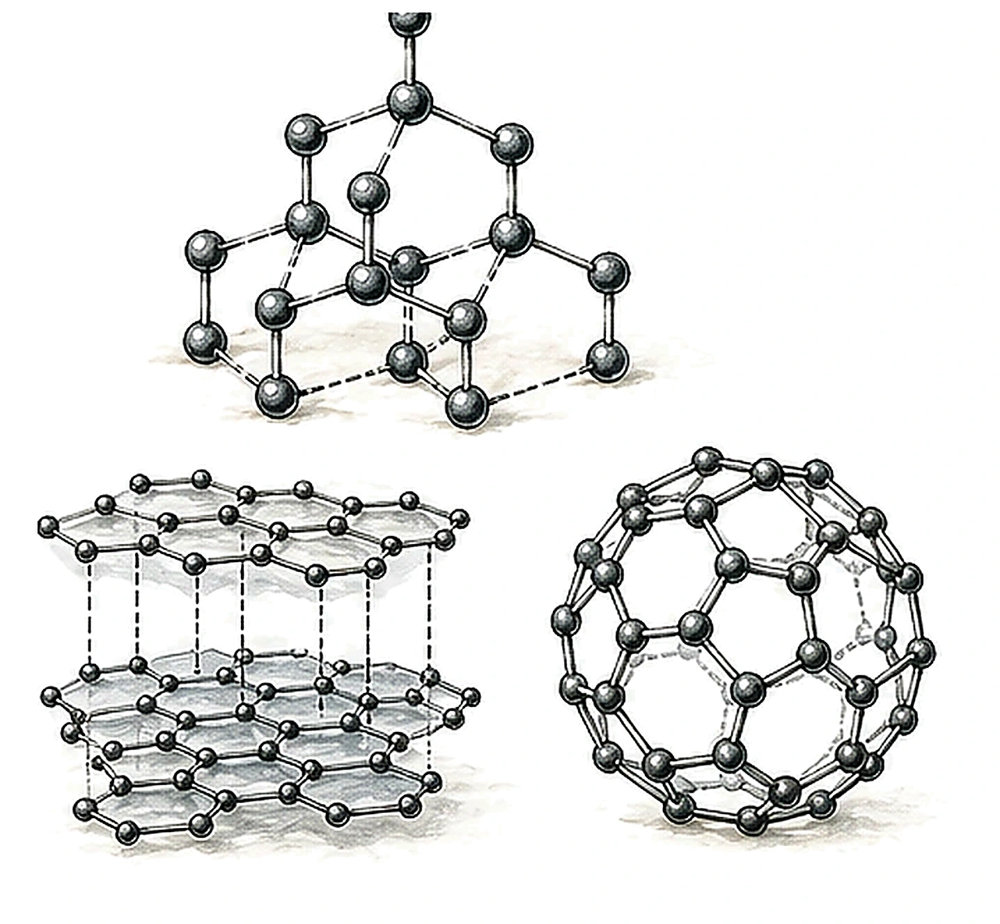
Electron Configuration
The arrangement of electrons around the nucleus determines many chemical properties of an atom. Each shell holds a maximum number of electrons and has a different energy level. In this introductory model, the first shell holds 2 electrons, the second holds 8, and the third is treated as holding 8 for the first 20 elements.
The outer shell, furthest from the nucleus.
Electrons in the outer shell. They control many reactions and bonding patterns.
Horizontal rows of elements in the periodic table are called periods.
Vertical columns are groups. Elements in the same group have the same number of valence electrons in this model.
Electronic Structures For Proton Numbers 1-20
| Element | Proton number | Electronic configuration | Valence electrons | Period | Group idea |
|---|---|---|---|---|---|
| Hydrogen, H | 1 | 1 | 1 | 1 | 1 valence electron |
| Helium, He | 2 | 2 | 2 | 1 | Group 0 noble gas |
| Lithium, Li | 3 | 2,1 | 1 | 2 | I |
| Beryllium, Be | 4 | 2,2 | 2 | 2 | II |
| Boron, B | 5 | 2,3 | 3 | 2 | III |
| Carbon, C | 6 | 2,4 | 4 | 2 | IV |
| Nitrogen, N | 7 | 2,5 | 5 | 2 | V |
| Oxygen, O | 8 | 2,6 | 6 | 2 | VI |
| Fluorine, F | 9 | 2,7 | 7 | 2 | VII |
| Neon, Ne | 10 | 2,8 | 8 | 2 | Group 0 noble gas |
| Sodium, Na | 11 | 2,8,1 | 1 | 3 | I |
| Magnesium, Mg | 12 | 2,8,2 | 2 | 3 | II |
| Aluminium, Al | 13 | 2,8,3 | 3 | 3 | III |
| Silicon, Si | 14 | 2,8,4 | 4 | 3 | IV |
| Phosphorus, P | 15 | 2,8,5 | 5 | 3 | V |
| Sulfur, S | 16 | 2,8,6 | 6 | 3 | VI |
| Chlorine, Cl | 17 | 2,8,7 | 7 | 3 | VII |
| Argon, Ar | 18 | 2,8,8 | 8 | 3 | Group 0 noble gas |
| Potassium, K | 19 | 2,8,8,1 | 1 | 4 | I |
| Calcium, Ca | 20 | 2,8,8,2 | 2 | 4 | II |
Stable Configurations: Group 0 Noble Gases
Noble gases are unreactive because their outer shells are full. Helium has a full first shell of 2 electrons; neon and argon have full outer shells of 8 electrons.
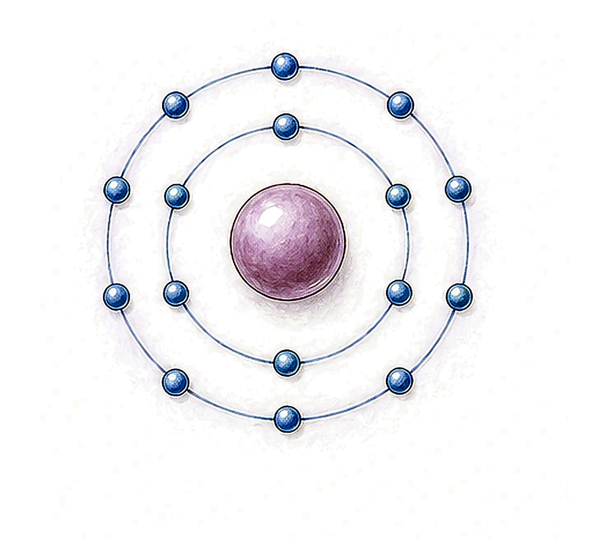
Chemical Bonds: Ionic Bonding
Atoms without full outer shells are reactive. To achieve a stable noble-gas-like electronic configuration, atoms may lose, gain, or share electrons. When atoms lose or gain electrons, they form ions.
A positive ion. Metals often form cations by losing valence electrons, such as Na+.
A negative ion. Non-metals often form anions by gaining electrons, such as Cl-.
The strong electrostatic force of attraction between positive and negative ions.
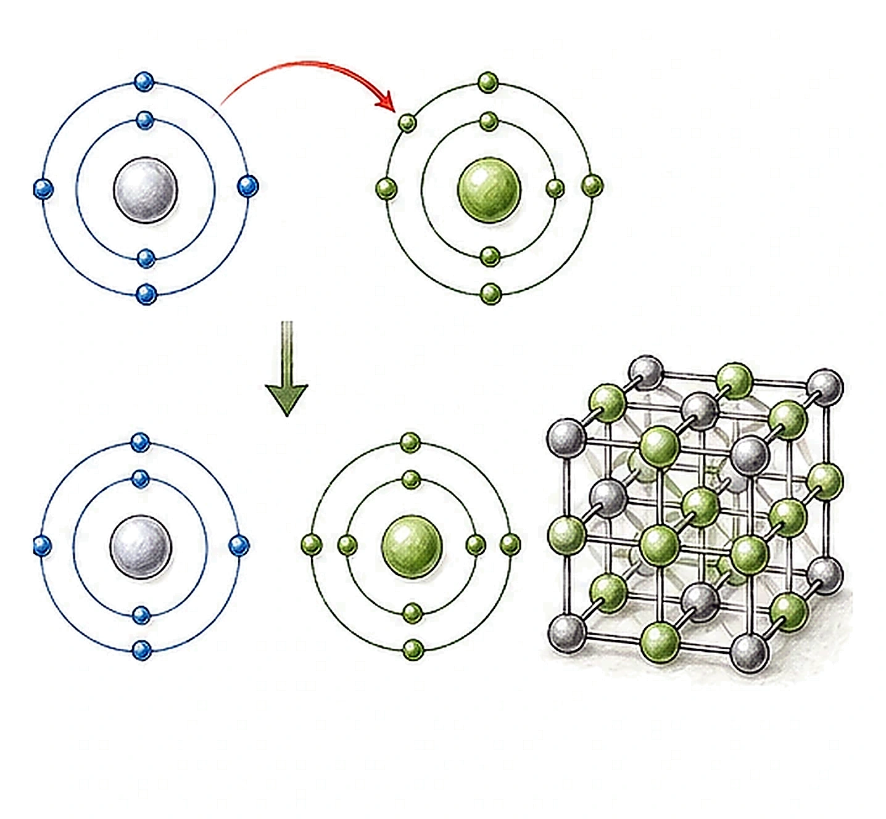
Source sentence, sharpened: when a metal reacts with a non-metal, metal atoms transfer valence electrons to non-metal atoms. Ions are formed, and both sides can reach a stable electronic configuration.
Covalent Bonding: Sharing Electrons
A covalent bond is formed by sharing electrons between two atoms. This often happens between non-metal atoms. The scan uses hydrogen, chlorine, oxygen, and water as examples.
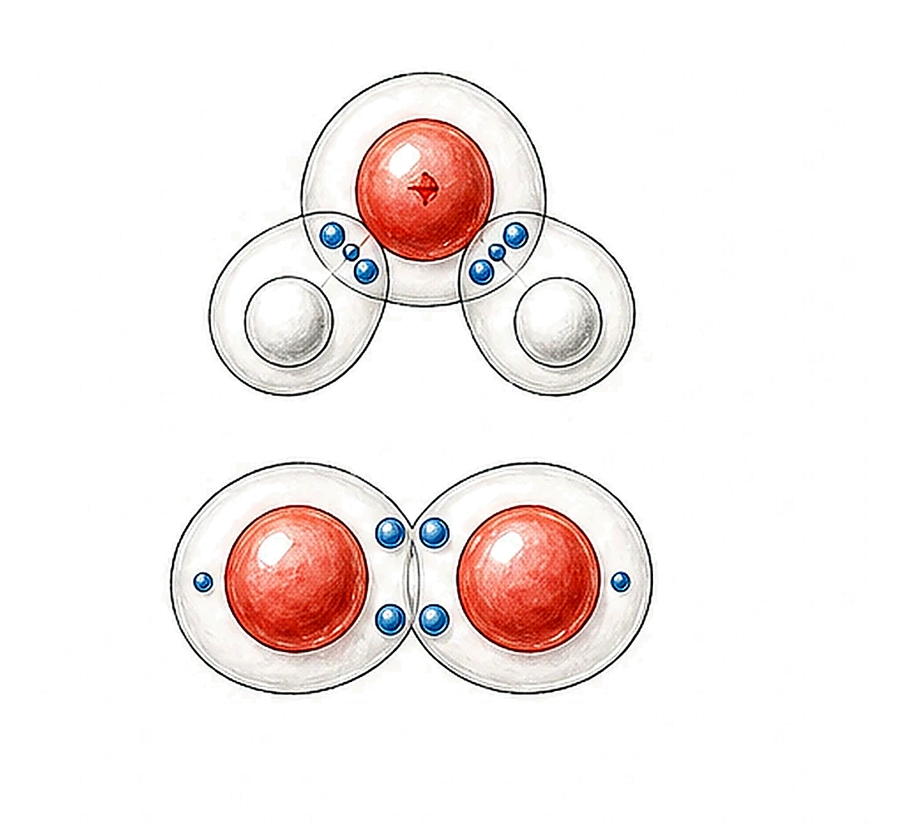
Small correction to remember: the scan lists oxygen, O2, under "common compounds", but oxygen gas is not a compound. It is a molecule of an element because it contains only oxygen atoms.
Metallic Bond, Metals, And Alloys
A metallic bond is the force of attraction between positive metal ions and the "sea" of mobile electrons. This model explains why metals often conduct heat and electricity, and why they can be malleable and ductile.
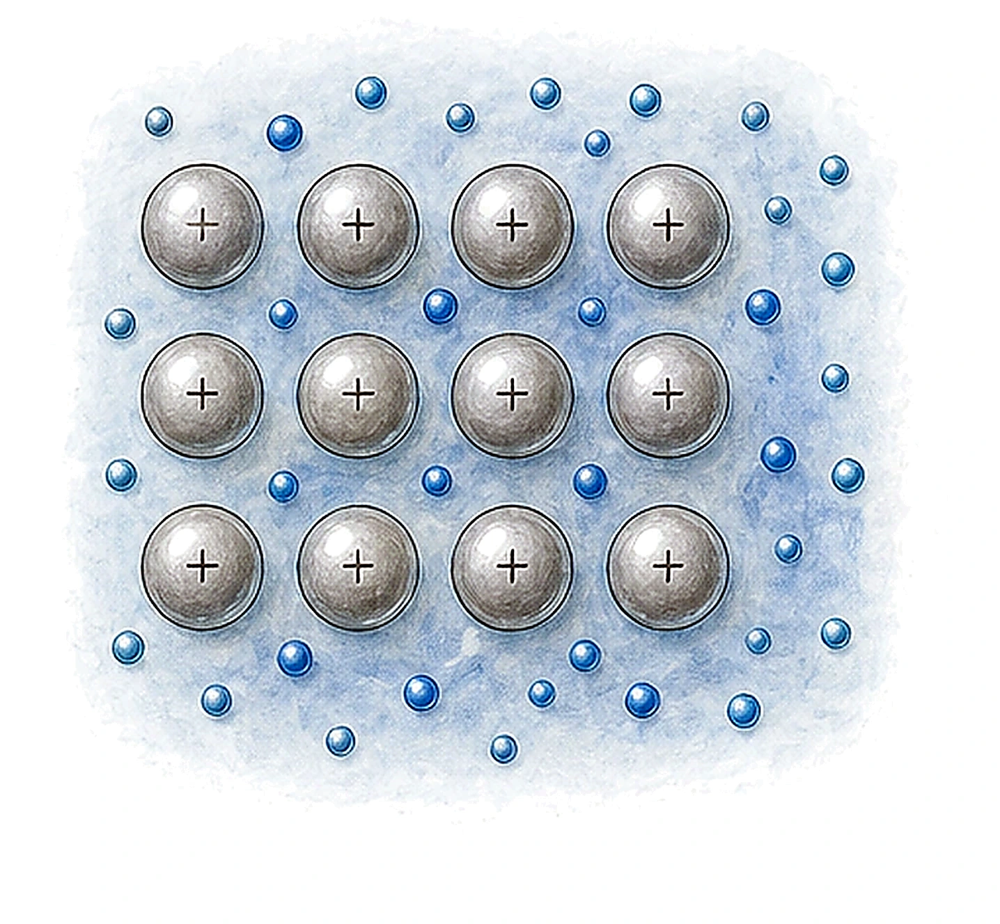
Metal Properties From The Scan
- Good conductors of heat and electricity.
- High density.
- High melting and boiling points.
- Malleable and ductile.
- Pure metals may react with air and water, and may wear away easily.
Alloys
An alloy is a mixture of a metal with one or a few other elements. Alloys can make metals harder and stronger, lower melting points, improve appearance, and make metals more resistant to corrosion.
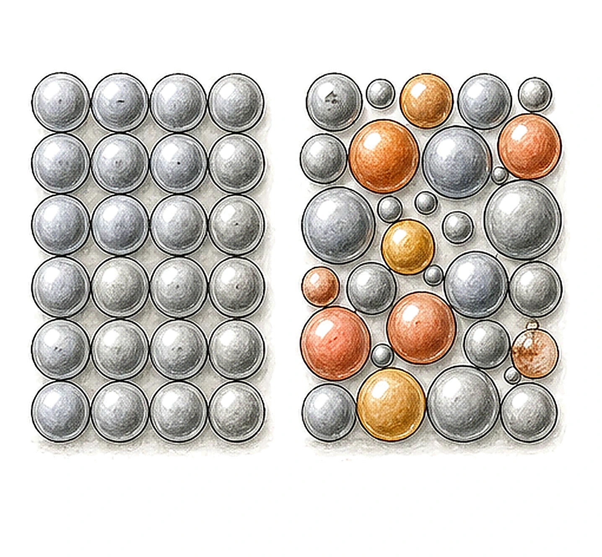
| Alloy from the scan | Composition | Important note |
|---|---|---|
| Brass | About 70% copper and 30% zinc | Often used where a gold-like appearance and workability are useful. |
| Bronze | About 90% copper and 10% tin | Harder than copper and historically important for tools and statues. |
| Steel | Iron and carbon | Properties vary strongly with carbon content and processing. |
| Stainless steel | Iron alloy with at least 11% chromium, often combined with nickel | Chromium helps resist corrosion. |
| Solder | Tin and lead, Sn-Pb, in the source example | Very soft and low melting point. Lead is toxic and has been prohibited in many uses. |
Periodic Table Trends From The Scan
The trends graphic in the scan is a quick map: metallic character generally increases down and to the left; non-metallic character, ionisation energy, and electronegativity generally increase up and to the right; atomic radius generally increases down and to the left.
Corrosion And Rusting
Rusting, or the corrosion of iron, is the process that produces rust. The scan lists the conditions needed for rusting: iron, oxygen, and water.
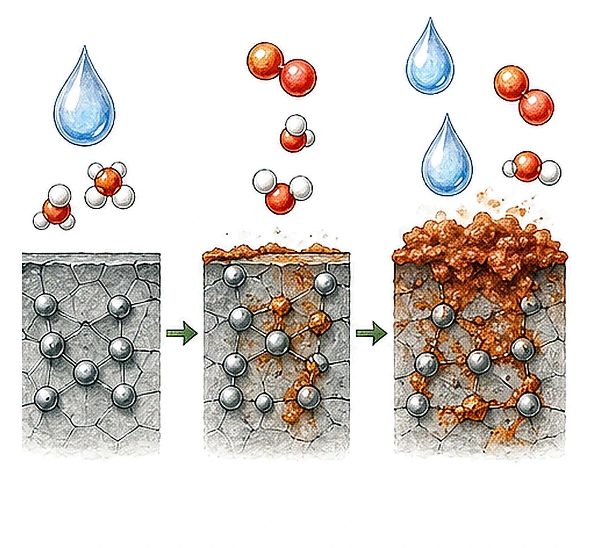
How To Prevent Rusting
- Keep iron dry or away from oxygen.
- Paint, oil, grease, or plastic-coat the surface.
- Galvanise with zinc or use sacrificial protection.
- Use stainless steel or another corrosion-resistant alloy.
Rust formula idea: rust is hydrated iron(III) oxide, often written approximately as Fe2O3.xH2O. Salt water speeds rusting because ions help charge move through the water.
Wrap Up
The source closes with four revision targets. Use them as a checklist for this Week 05 chapter.
Video Links Printed In The Scan
- Sugar dehydration by sulfuric acid, chromatography, distillation, physical separation methods, build-an-atom, electron configuration, noble gases, ionic bonding, covalent bonding, carbon allotropes, periodic table trends, alloys, and rusting were printed as video or web references in the source scan.
Rebuilt from the Week 05 scanned PDF, IMG_20260427_0005.pdf. The diagrams are newly drawn in HTML/SVG so the original particle, separation, isotope, bonding, alloy, and rusting ideas are easier to revise.